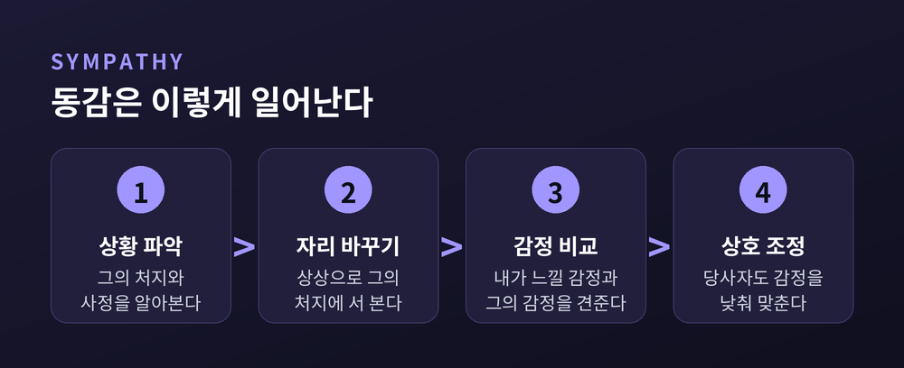
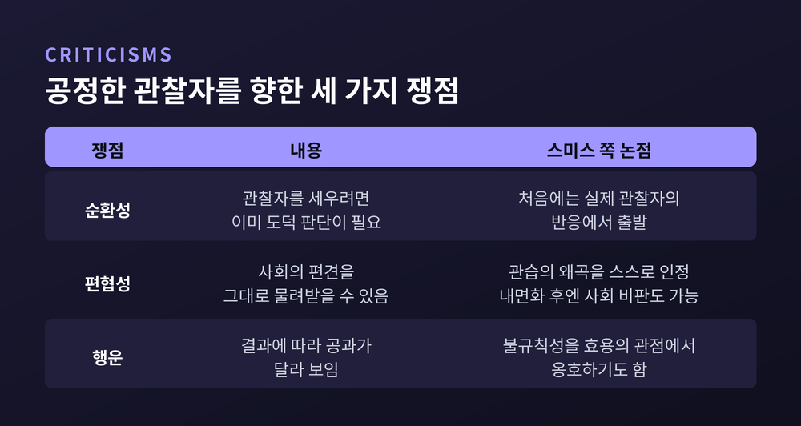

오늘은 애덤 스미스 『도덕감정론』의 핵심 개념인 공정한 관찰자에 대해 이야기해 보려 합니다. 『국부론』의 저자가 1759년에 먼저 내놓은 이 책은, 우리 안의 양심이 어디서 어떻게 생겨나는지를 설명하려는 시도였습니다. 이 글에서는 동감, 사회라는 거울, 안의 사람과 밖의 사람, 그리고 이 이론이 안고 있는 한계까지 차례로 따라가 보겠습니다.
먼저 결론을 세 줄로 적겠습니다.
『도덕감정론』은 이런 문장으로 시작합니다. "인간이 아무리 이기적이라 하더라도, 그 천성에는 분명히 타인의 운명에 관심을 갖게 하는 어떤 원리가 있다." 국내 번역서에서 흔히 인용되는 첫 문장을 풀어 쓴 것입니다.
이 책이 나온 해는 1759년입니다. 스미스는 당시 글래스고대학의 도덕철학 교수였습니다. 친구 흄이 같은 해 4월 12일자 편지로 책을 받았다고 알렸을 만큼, 초판은 그 무렵 세상에 나와 있었습니다. 『국부론』은 그로부터 17년 뒤인 1776년에 나옵니다.
스미스가 말하는 동감(sympathy)은 흔히 쓰는 '불쌍히 여김'과 조금 다릅니다. 슬픔뿐 아니라 어떤 정념에든 함께하는 마음, 곧 'fellow-feeling'을 뜻합니다. 작동 방식도 눈여겨볼 만합니다. 스탠퍼드 철학백과는 흄의 동감이 감정이 옮아가는 '전염'에 가깝다면, 스미스의 동감은 처지를 상상으로 옮겨 보는 '투사'라고 정리합니다. 스미스 본인의 표현으로는 "상상을 통해 우리는 그의 처지에 선다"입니다.
그래서 동감에는 정보가 필요합니다. 상대의 표정만 봐서는 일어나지 않고, 그가 왜 그런 처지에 이르렀는지를 알아야 합니다. 상대도 가만히 있지 않습니다. 관찰자가 공감할 수 있도록 자기 감정의 수위를 낮춥니다. 스미스는 이 쌍방의 조정이 사회의 덕을 만든다고 보았습니다.

스미스는 상호 동감에서 오는 기쁨도 짚습니다. 내 가슴속의 모든 감정에 남이 함께 느껴 주는 것을 보는 일보다 우리를 더 기쁘게 하는 것은 없다고 썼습니다. 도덕이 무거운 의무이기 전에, 이런 소박한 기쁨이 먼저 있다는 이야기입니다.
여기까지는 남을 판단하는 이야기입니다. 그렇다면 자기 자신은 어떻게 판단할까요. 스미스는 사고실험으로 답합니다.
사람이 어느 외딴곳에서 다른 인간과 한 번도 교류하지 않고 어른이 된다고 가정해 봅니다. 그는 자기 얼굴이 아름다운지 추한지 생각할 수 없듯이, 자기 성품이 훌륭한지도 생각할 수 없다는 것이 스미스의 주장입니다. 거울이 없으니 볼 수 없다는 것입니다. 이 거울은 사회입니다. 스미스는 이렇게 씁니다. 타인의 눈으로 우리 행위의 적정성을 따져 볼 수 있는 "유일한 거울"이 바로 다른 사람들의 표정과 반응이라는 것입니다.
순서가 중요합니다. 우리는 먼저 남의 성품과 행동을 평가합니다. 그러다 남들도 나를 같은 방식으로 본다는 사실을 알아차립니다. 이때 스미스가 쓰는 장치가 자기 분열입니다. "나는 나를 말하자면 두 사람으로 나눈다"는 것입니다. 검토하는 나와 검토받는 나가 생기고, 검토하는 쪽은 자기 자리를 떠나 남의 자리에서 바라봅니다.
이 능력은 어릴 때부터 훈련됩니다. 스미스는 아이가 처음에는 부모의 반응을 살피다가, 학교에서 또래를 만나며 자제를 배운다고 봅니다. 늘 봐주는 부모보다 서로 봐주지 않는 동등한 친구들 앞에서 우리는 감정을 다듬게 됩니다.
공정한 관찰자 개념이 단순한 눈치 보기와 갈라지는 지점이 여기입니다. 스미스는 인간이 "사랑받기를 원할 뿐 아니라 사랑스럽기를 원한다"고 말합니다. 비난을 두려워하는 데서 그치지 않고, 설령 아무도 비난하지 않더라도 비난받아 마땅한 사람이 되는 것을 두려워한다고도 적었습니다.
그래서 심판석이 둘이 됩니다. 실제 세상의 칭찬과 비난을 내놓는 '밖의 사람'이 있고, 칭찬받을 만한지를 따지는 '안의 사람'이 있습니다. 둘은 서로 다른 원리로 움직입니다.
문제는 두 목소리가 엇갈릴 때입니다. 세상이 죄 없는 사람을 비난하면 안의 재판관마저 소란에 놀라 당황할 수 있다고 스미스는 인정합니다. 이럴 때 그는 "그 자신의 양심이라는 훨씬 높은 법정"에 호소하라고 하고, 종교적인 사람에게는 세상을 모두 굽어보는 심판자에게 호소하는 길이 열려 있다고 덧붙입니다.
안의 재판관에 대한 표현도 흥미롭습니다. 스미스는 이것을 시인들이 말하는 반신(半神)에 빗댑니다. 일부는 불멸의 혈통이고 일부는 필멸의 혈통이라는 것입니다. 군중의 아우성에 흔들리면 필멸의 핏줄이 드러납니다. 신에 가까워 보이지만 신은 아니라는 말입니다. 플라이슈하커는 이를 신의 판단을 가리키는 지시자이되 그 자체가 온전히 신적이지는 않다는 뜻으로 읽습니다.
스미스는 예로 장 칼라스를 듭니다. 억울하게 처형된 인물인데, 그가 괴로워한 것은 잔혹한 형벌보다 자기 기억에 씌워질 불명예였다고 했습니다. 사후의 평판조차 신경 쓰이는 존재가 사람이라는 이야기입니다.
이론이 실제로 무엇을 설명하는지는 스미스의 유명한 사고실험에서 드러납니다. 중국 전체가 지진으로 삼켜졌다는 소식을 유럽의 선량한 사람이 듣는다고 해 봅니다. 그는 분명 안타까워하겠지만, 그 일은 자기 일처럼 와닿지 않습니다. 반면 내일 자기 새끼손가락을 잃는다면 오늘 밤 잠을 이루지 못합니다. 스미스의 표현으로는, 직접 보지 않는 한 "1억 형제의 파멸 위에서도 깊은 안심 속에 코를 골 것"입니다.
그렇다면 무엇이 우리의 이런 자기애를 꺾을까요. 스미스는 부드러운 인간애나 가냘픈 자비의 불꽃은 아니라고 답합니다. 그것은 "이성, 원칙, 양심, 가슴속에 사는 자, 안의 사람, 우리 행위의 위대한 재판관이자 중재자"입니다. 이 재판관에게 물어야만 자기 일을 제 모양과 크기로 볼 수 있다고도 썼습니다.
여기서 공정한 관찰자의 실제 쓰임이 보입니다. 내 이익과 남의 이익이 부딪칠 때, 우리는 내 자리에서도 상대 자리에서도 아닌 "둘 다와 특별한 관계가 없는 제3자의 자리"에서 봐야 합니다. 경쟁도 같은 틀로 정리됩니다. 부와 명예를 향한 경주에서는 온 힘을 다해 달려도 좋지만, 경쟁자를 밀치고 넘어뜨리는 순간 관찰자들의 너그러움은 끝난다고 스미스는 썼습니다.
감수성과 자제의 관계도 흥미롭습니다. 스미스는 남의 감정에 민감한 것이 자제와 모순되지 않고, 오히려 그 자제의 바탕이라고 말합니다. 감정에 둔감해서 참는 것이 아니라, 남의 시선으로 내 감정을 헤아리기에 절제할 수 있다는 것입니다.
공정한 관찰자가 늘 제대로 작동하는 것은 아닙니다. 스미스는 이 약점을 정면으로 적습니다. "이 자기기만, 인류의 치명적 약점은 인간사의 무질서 절반의 원천이다."
격정에 휩싸이면 안의 재판관도 흐려집니다. 이때 도움이 되는 것이 일반규칙입니다. 스미스에 따르면 규칙은 선험적으로 주어지지 않습니다. 구체적인 사례에서 우리의 도덕 감각이 승인하거나 부인한 경험이 쌓여 규칙이 만들어집니다. 그렇게 습관적 성찰로 마음에 굳은 규칙은 자기애의 왜곡을 바로잡는 데 큰 쓸모가 있다고 했습니다.
이 대목은 도덕이 감정에서 규칙으로 옮겨 가는 길을 보여 줍니다. 사람들이 살인을 하지 않는 것은 단지 그것이 끔찍하게 느껴져서가 아니라, 살인이 그 자체로 그르다고 여기기 때문입니다.
공정한 관찰자 이론은 완결된 해답이라기보다 흥미로운 문제 제기에 가깝습니다. 비판도 분명합니다.

첫째는 순환성입니다. 공정한 관찰자를 세우려면 이미 무엇이 도덕적인지 알아야 한다는 지적입니다. 둘째는 편협성입니다. 관찰자가 사회 속에서 자라는 이상, 그 사회의 편견을 그대로 담을 수 있습니다. 스미스 자신도 관습이 판단을 왜곡한다고 인정했고, 자연이 사람들로 하여금 부자를 숭배하고 가난한 자를 경멸하게 만든다고 한탄했습니다. 플라이슈하커는 이 관찰자의 기준이 결국 "우리 사회의 것"이라는 점을 인정하면서도, 정보를 늘리고 남의 처지를 상상하는 노력은 여전히 도덕적 진보에 쓸모가 있다고 봅니다.
셋째는 행운의 문제입니다. 의도가 아무리 선해도 결과가 어긋나면 공과가 불완전해 보입니다. 미수에 그친 범죄가 기수범보다 가볍게 처벌되는 것이 그 예입니다. 스미스는 이런 불규칙성을 한탄하기보다 효용의 관점에서 옹호하기도 했습니다. 이 점이 관찰자의 권위를 흔든다는 해석이 있습니다.
한편 스미스가 이 관찰자를 신의 시점으로 설계하지 않았다는 점은 짚어 둘 만합니다. 전지전능한 판관이 아니라, 당사자와 직접 관련된 사람들의 사정을 정확히 알고 자기 이익이 걸리지 않은 관찰자면 충분하다는 것입니다. 사회에서 자란 관찰자이면서 내면화된 뒤에는 사회를 비판하는 원천이 되기도 한다는 것이 스탠퍼드 철학백과의 설명입니다. 스미스가 노예제를 비판하며 아프리카 출신 노예의 도량이 비열한 주인의 영혼으로는 가늠하기 어렵다고 쓴 것이 그 사례로 거론됩니다.
판본의 문제도 있습니다. 『도덕감정론』은 스미스 생전 여섯 번 나왔고(1759, 1761, 1767, 1774, 1781, 1790), 마지막 6판은 1790년 5월에 나왔습니다. 스미스는 1788년부터 개정에 매달려 양심을 다룬 3부를 고치고, 덕을 다루는 6부를 새로 썼습니다. 이 과정에서 관찰자가 지혜와 덕의 정도가 다른 여러 관찰자의 스펙트럼으로 재정식화되었다는 해석이 있습니다. 공정한 관찰자가 실제 사람인지 상상된 이상인지는 지금도 학자마다 다르게 읽습니다. 뮬러는 실제 관찰자와 상상의 관찰자를 모두 포괄하는 추상적 이상 범주로 보고, 플라이슈하커는 신의 판단을 가리키는 지시자로 봅니다.
짚고 넘어갈 논쟁이 하나 더 있습니다. 동감을 강조한 『도덕감정론』과 이기심을 강조한 『국부론』이 서로 모순된다는 '애덤 스미스 문제'입니다. 독일 역사학파에서 비롯된 주장으로, 몬테스는 브렌타노(1877) 등이 먼저 문제를 제기했고 1898년 오켄이 정식화했다고 정리합니다.
오늘날 대부분의 스미스 연구자는 이 모순을 인정하지 않습니다. 동감이 자기 이익에 대한 관심과 타인에 대한 배려를 함께 품고 있기 때문입니다. 앞서 본 경주 비유, 곧 경쟁은 허용하되 반칙은 허용하지 않는 관찰자의 선이 두 책을 잇는 접점으로 읽힐 수 있습니다.
정리하면 이렇습니다. 스미스가 그린 양심은 하늘에서 내려온 목소리가 아니라, 타인의 시선을 거치며 길러진 내 안의 제3자입니다.
"나를 보려면 먼저 남의 자리에 서 보아야 한다" -- 그의 이론을 이 한 줄로 줄일 수 있겠습니다.
분노나 억울함에 휩싸였을 때, 나도 아니고 상대도 아닌 제3자가 이 일을 어떻게 볼지 한 번만 물어보시길 권합니다. 답이 늘 정확하지는 않겠지만, 질문하는 순간 자리는 이미 조금 달라져 있을 것입니다.